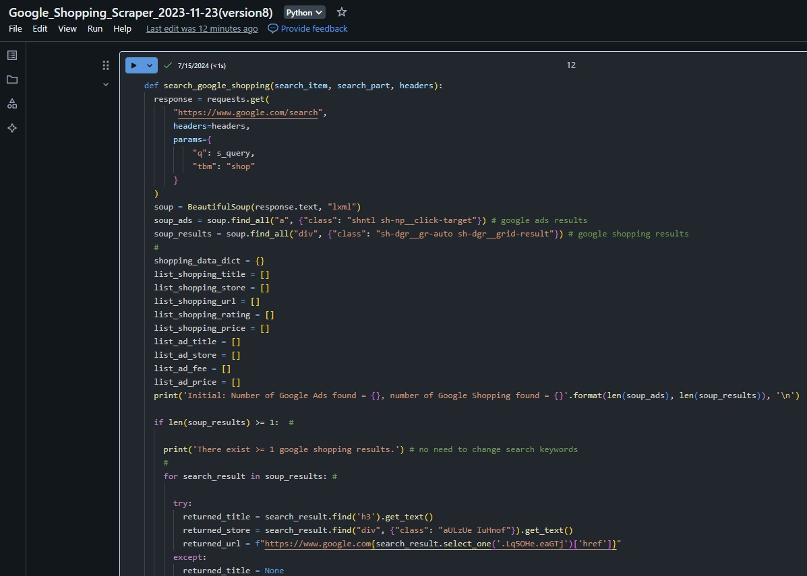
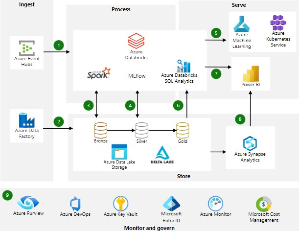
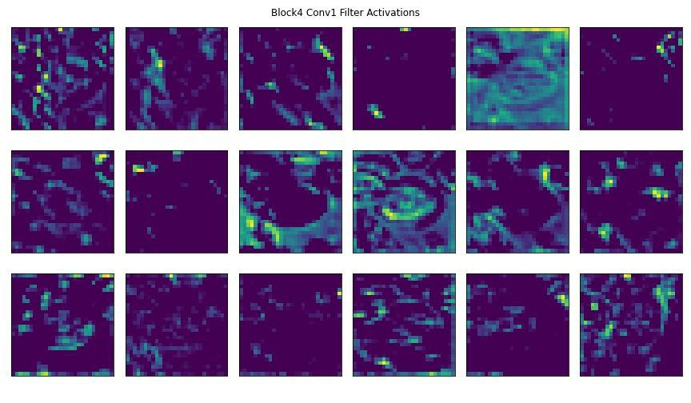
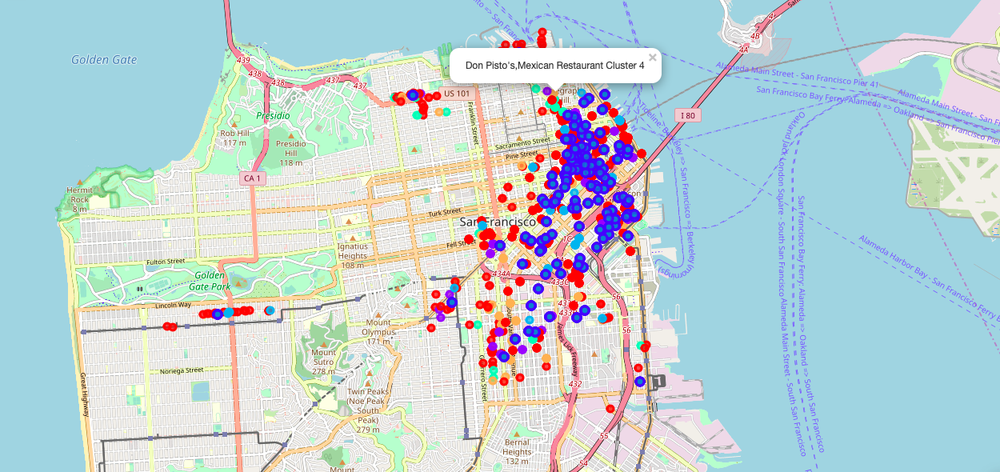
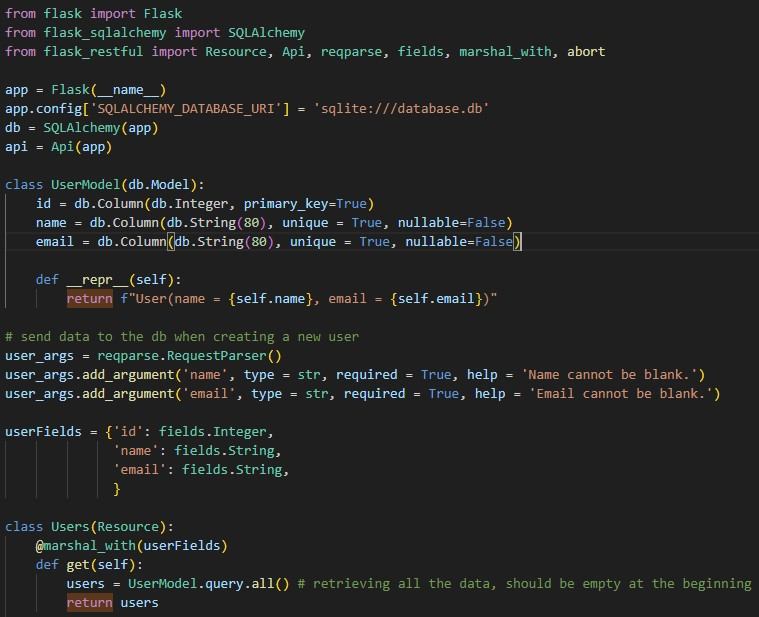
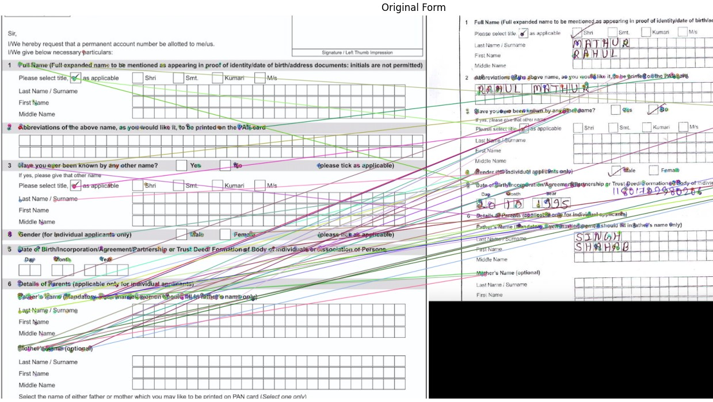

Data analytics · Data science · Automation
Data that moves
business forward.
I combine analytics, machine learning, data engineering, and commercial judgement to improve profit, sharpen customer decisions, and make teams more efficient.
What I bring
I turn complex data into clear commercial value—then build the systems that make it repeatable.
Selected impact
Work that changed
the outcome.
Commercial problems, technical solutions, and measurable results—delivered with category, finance, marketing, operations, IT, and sales teams.

01 / Pricing intelligence
Turning market data into portfolio profit
Built competitive-pricing and elasticity models from large-scale scraped product records, structured testing, and customer evidence.
100M+ records

02 / Cloud automation
Building an engine for better work
Designed automated data workflows across Azure Databricks, Data Factory, DevOps, Blob Storage, PySpark, SQL, and APIs.
50%+ effort saved

03 / Computer vision
Seeing what customers respond to
Used CNN image features and customer reaction data to identify preferred design characteristics and make content more relevant.
Better engagement
04 / Customer insight
Finding the signal in customer language
Combined NLP, sentiment analysis, campaign data, and A/B testing to understand interests and improve content, timing, and targeting.
2× benchmark
Project lab
Technical thinking,
made visible.
A closer look at the prototypes and analytical artefacts behind API development, document alignment, and geospatial decision support.



End-to-end capability
From raw signal
to confident action.
Hands-on across the full data lifecycle, with the commercial judgement to connect technical work to what matters.
Data engineering
Reliable pipelines, databases, migrations, web scraping, APIs, and ETL across SQL Server, PostgreSQL, Azure, and Spark.
Analytics & modelling
Forecasting, pricing, segmentation, optimisation, and machine-learning models designed to support real decisions.
Visualisation
Power BI, Tableau, geospatial analysis, executive reporting, and clear data stories that stakeholders can use.
Commercial activation
Connecting insight to pricing, product, sales, marketing, UX, and operations—and helping teams deliver the change.
TOOLKIT
Python · PySpark · T-SQL · PostgreSQL · R · TensorFlow · scikit-learn · Azure Databricks · Data Factory · Azure ML · Power BI · Tableau · REST / SOAP APIs · SSIS · Azure DevOps
About William
Analytical rigour.
Human clarity.
William is an experienced data analyst and data scientist who works comfortably across the full data lifecycle—from extraction and modelling to visualisation, reporting, and implementation.
He combines technical depth with commercial focus. His work has improved profitability, customer engagement, decision quality, and team efficiency, while his collaborative approach has helped more than 20 cross-functional projects move from idea to outcome.
Alongside hands-on delivery, William brings stakeholder management, mentoring, training, and a consistent record of reliability: every KPI achieved over six years and agreed work delivered.
“The upper limit is turning data into value. The foundation is making work simpler, faster, and more reliable.”
Let’s build something useful